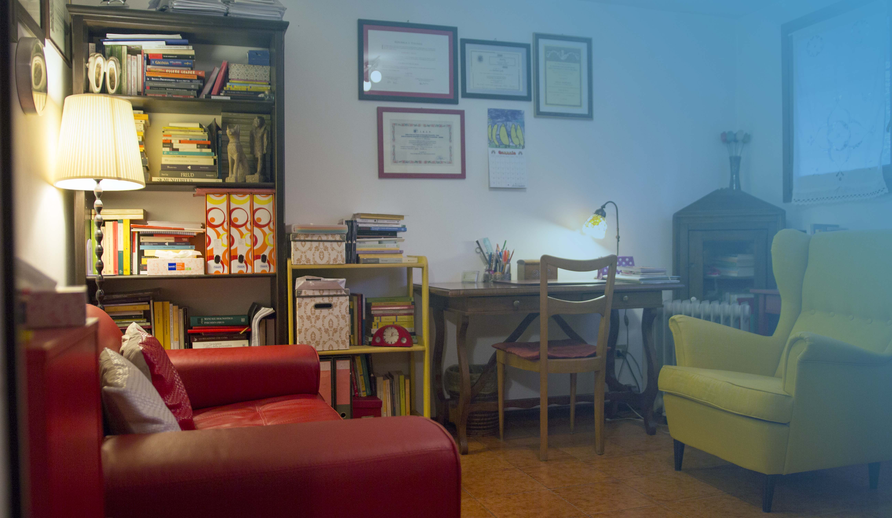

La psicoanalisi è un'opportunità...
un'opportunità di ripartire
Jacques Lacan
Contattami
SERVIZI
Psicoterapia individuale
Processo interpersonale, consapevole e pianificato, rivolto al singolo individuo. Tale processo ha l’obiettivo di ridurre i sintomi, le situazioni di sofferenza, i disturbi del comportamento, il disagio psicologico (Galimberti, 1992). La durata del trattamento dipende dalla problematica portata dal paziente.
Psicoterapia di coppia e famiglia
Processo interpersonale, consapevole e pianificato, che si propone di modificare gli schemi di interazione all'interno della coppia o della famiglia, in quanto percepiti come fonte di disagio. La psicoterapia (che si svolge attraverso colloqui), si propone di aiutare la coppia o la famiglia ad integrare il cambiamento per ricostruire l’equilibrio. La durata del trattamento dipende dalla problematica presentata.
Sostegno psicologico
Si propone di dare un supporto emotivo al paziente, aiutandolo nelle sue difficoltà esistenziali attraverso un intervento attivo del terapeuta che consiglia, guida e talvolta dirige (Galimberti, 1992). La durata del trattamento dipende dalla problematica portata dal paziente.
Psicoterapia didattica
Trattamento psicoterapeutico a cui si sottopongono coloro che vogliono svolgere la professione di psicoterapeuta (Galimberti, 1992). Per accedere a questo tipo di psicoterapia, è necessario aver conseguito la laurea quinquennale in psicologia (o in medicina) ed aver intrapreso un percorso di specializzazione quadriennale.
Counseling
Consiste in un’azione di sostegno terapeutico nella decisione, allo scopo di creare le condizioni per un’autonomia decisionale, attraverso la considerazione di fattori coscienti. Scopo del counseling è quello di consentire all’individuo una visione realistica di sé e dell’ambiente sociale in cui si trova ad operare, con la riduzione al minimo della conflittualità dovuta a fattori soggettivi (Galimberti, 1992). La durata del trattamento è breve (4 – 6 sedute).
Supervisione
E' rivolta a psicoterapeuti in formazione. Essi rendicontano del proprio modo di condurre i trattamenti attraverso relazioni orali e/o scritte, e il supervisore controlla il lavoro del terapeuta in formazione, in particolare il suo controtransfert (Galimberti, 1992).
Mi occupo di
Disturbi trattati
- depressione e disturbi dell'umore
- depressione post-partum
- disturbi d'ansia
- disturbi somatoformi
- disturbi alimentari
- disturbi del controllo degli impulsi
- disturbi di personalità
- problemi relazionali e di coppia
- problemi del ciclo di vita
- educazione dei figli
E inoltre di
- autostima
- assertività
- comunicazione
- intelligenza emotiva
- burnout
- stress
- rabbia
- omosessualità
- figli e rapporto di coppia
- dipendenze patologiche
Esperienze di lavoro
Studi
1999
Università di Padova
Laurea
Laurea in Psicologia con indirizzo “Clinico e di Comunità” conseguita presso l’Università di Padova nel 1999, discutendo la tesi: “Necrofilia e comportamenti necrofagici. Aspetti letterari, psicopatologici, forensi e antropologici”. 24.10.2002 iscrizione all'Ordine degli Psicologi-Psicoterapeuti della Regione Emilia Romagna, con numero 3084/A.
Scuole di specializzazione
Specializzazione quadriennale in Psicoterapia Psicoanalitica presso I.R.E.P. (Istituto di Ricerche Europee in Psicoterapia Psicoanalitica), sede di Padova, discutendo la tesi "Il papà non è la mamma: Psicoterapia della prepsicosi attraverso l'analisi di un caso di paternità mancata". Tale specializzazione consente di lavorare come psicoterapeuta con il singolo individuo, la coppia, la famiglia.
Corsi di Formazione e aggiornamenti
- Corso di Formazione “La valutazione della motivazione al cambiamento: il questionario MAC” c/o Azienda USL.
- Corso di Formazione “Tecniche di base del colloquio motivazionale”, c/o Ser.T.
- Corso di Formazione: “Empatia e negoziazione”, presso Centro Servizi di “Pratolungo”.
- Corso-workshop “L’orientamento come mediazione fra scuola e università” c/o Università degli studi di Ferrara.
- “Il salto nel buio - Laboratorio multimediale, workshop sul management della crisi suicidaria e la prevenzione del suicidio” c/o Dipartimento Salute Mentale.
- Corso di Formazione “Tutela sui minori figli di tossicodipendenti” c/o Sala Congressi San Girolamo dei Gesuati di Ferrara.
Master
- 2003 Master in "Psicologio giuridica, psicopatologia e psicodiagnostica forense", presso l'Associazione Italiana Psicologia Giuridica (A.I.P.G.), Roma.
- 2003 Master in "Psicologia Giuridica" presso il Centro Clinico di Psicologia Giuridica, Padova.
CONTATTI
© Gelli Barbara by Maskyn